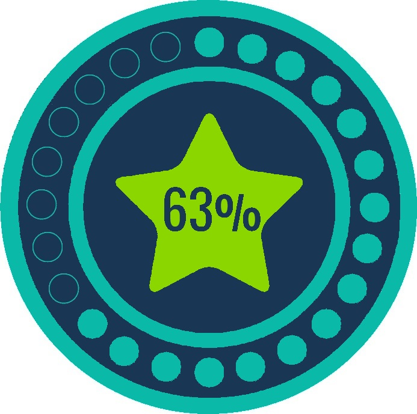

Rewards Info
For our site, you can gain rewards if you make an account. The main way to get these rewards is to
complete different types of recipes, share your own custom ones, and rate/review other users recipes.
This provides users with a way to not only communicate with other users, but also create a friendly enviorment.
Levels & Rewards
Level 1 - Busboy
- Can keep track of recipes made
- No access to rating or rewards features
- Used to get the hang of our plaform
Level 2 - Kitchen Assistant

- Gain access to rating or rewards features
- You can now comment on recipes to give feedback
- Unlock you character avatar!!!
- Progress bar now availiable
Level 5 - Apprentice
- Gain access to more avatars, can also create
Level 10 - Chef de Partie
- Gain more chef skill - can be used to impress people
- Someone plz help me im out of ideas
Level 15 - Sous Chef
- Gain even more chef skill - can be used to impress even people
- Someone plz help me im out of ideas
Level 20 - Executive Chef
- Gain even even more chef skill - can be used to impress even even people
- Someone plz help me im out of ideas
Level 20 - Chef de Cusine (Head Chef)
- You have become unstapable
- Gordon Ramsey bows before you